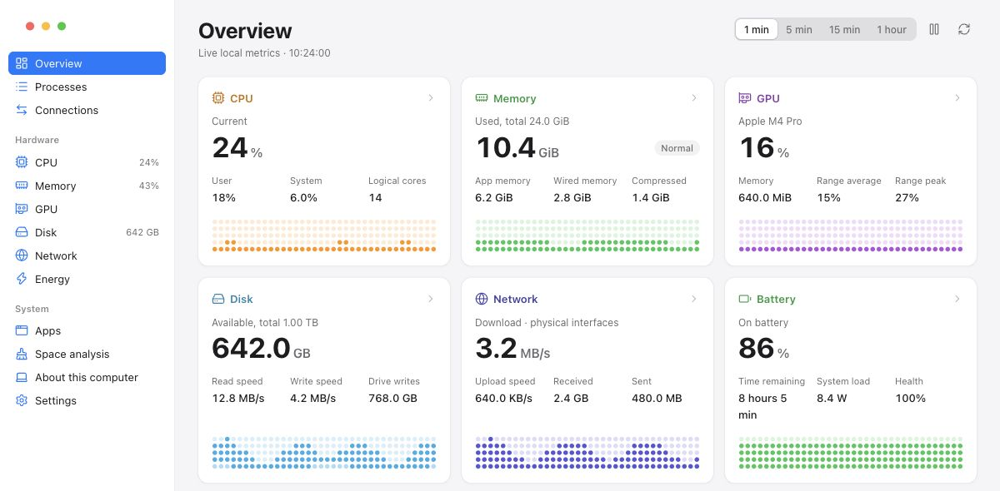

Lives in your menu bar.
Keep the metrics you choose in the menu bar. Closing the window only hides it; native sampling keeps running.
A free, open-source system monitor for macOS, Windows and Linux. CPU, memory, disk, network, processes and connections, with live readings in your menu bar.

Start with six hardware panels at a glance, then go deeper into per-core activity and up to an hour of in-session history.
Keep the metrics you choose in the menu bar. Closing the window only hides it; native sampling keeps running.
Reads native system counters locally. No account, no cloud. History is kept in memory only.
Sort processes, group usage by app, and see every open TCP and UDP connection.
Analyze disk usage, review what you select, then move it to the Trash.
Free for macOS, Windows and Linux. No account or subscription required.
Apple Silicon and Intel
Ad-hoc signed. Not notarized.
x86_64 PCs
Unsigned installer. Requires WebView2.
x86_64 desktops
GTK 3, WebKitGTK 4.1 and a desktop tray required.
Version 0.2.6Release notesSHA-256 checksums
Core collectors are tested on all four build targets. Desktop interaction is verified on macOS Apple Silicon; Windows/Linux desktop and battery/GPU hardware coverage are still in progress. Available GPU and power readings depend on your hardware and drivers.
No. RockshinOps reads system metrics locally. History is held in memory for the current session. There is no account or hosted monitoring service to configure.
Analysis is read-only. You can review and move selected items to the system trash; emptying the trash requires confirmation. On macOS you can also review apps and possible associated files. Process Quit and Force Quit require separate confirmation.
Yes. The app follows your system language by default. Choose System default, 中文 or English in Settings; changes are saved automatically.
Yes. RockshinOps is MIT-licensed and built with Go, MyGo and TypeScript. Read the code on GitHub